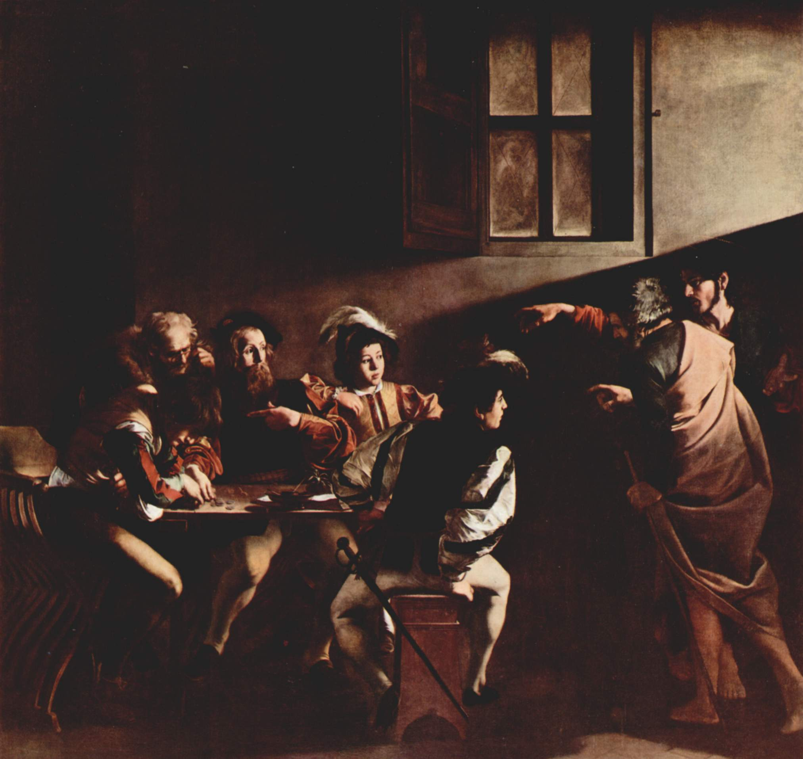
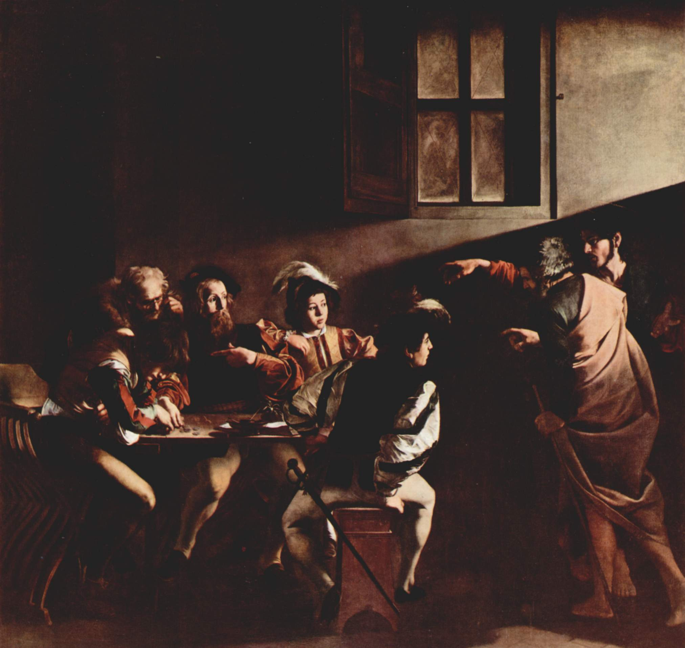
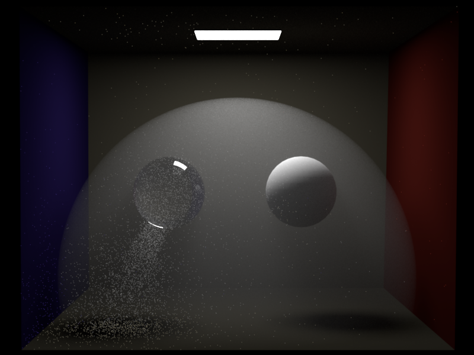
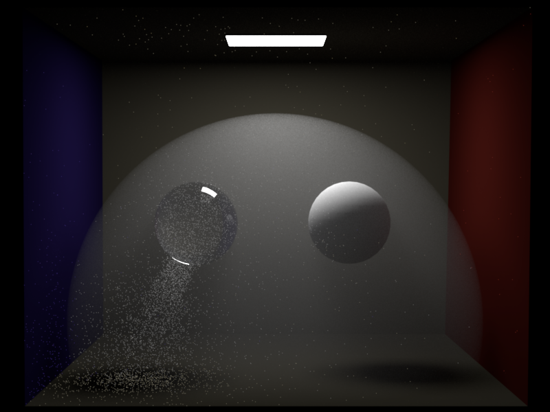

After sketching the first part of it, and having already in mind the god rays that go from left to right, I recalled this painting by Caravaggio, called "La Vocazione", which served an inspiration for the lighting of the scene.

Since the sketch is quite rough and just intended as a scene setup for myself, I will explain my thoughts directly through the final image, so please refer to it while reading the following.
Since I am quite a melancholic person, I interpret change - especially the inevitable change - as sad and melancholic. To express this, I thought about my grandparents and the passing of time. The picture clearly shows the interior of a house with old style and consumed furniture (*floor, furniture and chessboard are microfacet, texture mapped and normal mapped*), so a "typical" grandparents' house, with objects suggesting that they still live there (*chess pieces are rough dielectrics and rough metals*). The light enters from the left (*directional light*) and covers most of the image, suggesting a reading direction from left to right, and it's a sunset light both in color and inclination, with the time on the center clock being around 9pm. However, the image gets darker towards the right side, and the clock on the right, which is in a much more modern style, reads 12, so midnight. This indicates the passing of time, and the fact that, one day, the grandparents will inevitably pass away. The left side of the image is the present, because it's *in focus*. When they will pass, there is usually a very sad period of time in which their children will slowly move out some (or most) of the old stuff. This period of time is shown in the "future" part of the image, so the right, with the boxes.
This extremely sad reading, though, is not the only possible reading of the image. In fact, there is a strange light coming from the framed picture hanging on the right wall. Actually, what is it? A framed picture? A TV? In fact, it's a window (*texured light*) on a bright and sunny day, with kids playing outside. Under this consideration, the clock on the right is actually noon, and represents another interpretation for the future, a much happier one, in which the family of one of the children of the grandparents is moving in with the boxes, and with happy kids. The modern clock serves as another clue for this interpretation. The clock, along with the door and the *environment map* that illuminates the scene from behind the camera, show a much more modern style, foreseeing the future of the new family, in a picture that can now be read as a melancholic remembrance of the old times when the grandparents were alive.
Moreover, the reflections from the modern lights can be seen on all the dielectrics and metals on the left of the image, signifying that the grandparents can already foresee, in their present, the happy future lives of their children.
The image and the main theme "change" have a double interpretation: a sad ending but a happy new beginning.
Feature list
============
After sketching the first part of it, and having already in mind the god rays that go from left to right, I recalled this painting by Caravaggio, called "La Vocazione", which served an inspiration for the lighting of the scene.

Since the sketch is quite rough and just intended as a scene setup for myself, I will explain my thoughts directly through the final image, so please refer to it while reading the following.
Since I am quite a melancholic person, I interpret change - especially the inevitable change - as sad and melancholic. To express this, I thought about my grandparents and the passing of time. The picture clearly shows the interior of a house with old style and consumed furniture (*floor, furniture and chessboard are microfacet, texture mapped and normal mapped*), so a "typical" grandparents' house, with objects suggesting that they still live there (*chess pieces are rough dielectrics and rough metals*). The light enters from the left (*directional light*) and covers most of the image, suggesting a reading direction from left to right, and it's a sunset light both in color and inclination, with the time on the center clock being around 9pm. However, the image gets darker towards the right side, and the clock on the right, which is in a much more modern style, reads 12, so midnight. This indicates the passing of time, and the fact that, one day, the grandparents will inevitably pass away. The left side of the image is the present, because it's *in focus*. When they will pass, there is usually a very sad period of time in which their children will slowly move out some (or most) of the old stuff. This period of time is shown in the "future" part of the image, so the right, with the boxes.
This extremely sad reading, though, is not the only possible reading of the image. In fact, there is a strange light coming from the framed picture hanging on the right wall. Actually, what is it? A framed picture? A TV? In fact, it's a window (*texured light*) on a bright and sunny day, with kids playing outside. Under this consideration, the clock on the right is actually noon, and represents another interpretation for the future, a much happier one, in which the family of one of the children of the grandparents is moving in with the boxes, and with happy kids. The modern clock serves as another clue for this interpretation. The clock, along with the door and the *environment map* that illuminates the scene from behind the camera, show a much more modern style, foreseeing the future of the new family, in a picture that can now be read as a melancholic remembrance of the old times when the grandparents were alive.
Moreover, the reflections from the modern lights can be seen on all the dielectrics and metals on the left of the image, signifying that the grandparents can already foresee, in their present, the happy future lives of their children.
The image and the main theme "change" have a double interpretation: a sad ending but a happy new beginning.
Feature list
============
| Feature | Identifier | Standard point count | Adjusted point count |
|---|---|---|---|
| Textures | #XS-tex | 10 | 10 |
| Normal mapping | #XS-mapping | 5 (due to textures) | 5 |
| Depth of Field | #XS-DOF | 10 | 10 |
| Rough conductors BRDF | #XS-extbsdf | 10 | 5 |
| Extra emitter - Directional light | #XS-extemi | 10 | 10 |
| Image Based Lighting | #S-imglight | 10 (due to Hacker points) | 10 |
| Homogeneous Participating Media | #M-homomed | 30 | 30 |
| Total | 85 | 80 | |

 Directional Light
=========
I implemented directional lights in the file `directional.cpp`, as a subclass of `Emitter`, following PBRTv3 explanations. The file is quite simple, but hides some technical challenges under the hood. Since the directional light is located at "infinity", the emitter pre-processes the scene to set the outer bounds. During the sampling process, a point on the imaginary emitting surface is returned such that the direction between the point that requested illumination and the imaginary emitting point is in fact the direction of the directional light. Extra care had to be taken for two things. First, directional lights do not decrease their emission with distance, so just like in normal maps I had to do waste some computation for cosine substitution, here I do the same with the distance, avoiding to break the interface with Nori. Emitters now also have other utility methods that are useful for Next Event Estimation and Multiple Importance Sampling, to determine if and how they can be hit: this will be useful also for Image Based Lighting. Second, since rays from the directional light are coming from outside the bounding box of the scene, the Epsilon of such rays can behave wrongly, causing light leaks in the angles of the cbox. To account for this and avoid the leaks, the Epsilon of the ray is set by the Emitters now, and it is re-normalized when dealing with distant sources.
As parameters, the user can set the irradiance and the direction.
Here is a comparison to Mitsuba 3, which is on the left, achieving 0 mean error on TEV. EXR files are available in the folder `8.directional`.
Directional Light
=========
I implemented directional lights in the file `directional.cpp`, as a subclass of `Emitter`, following PBRTv3 explanations. The file is quite simple, but hides some technical challenges under the hood. Since the directional light is located at "infinity", the emitter pre-processes the scene to set the outer bounds. During the sampling process, a point on the imaginary emitting surface is returned such that the direction between the point that requested illumination and the imaginary emitting point is in fact the direction of the directional light. Extra care had to be taken for two things. First, directional lights do not decrease their emission with distance, so just like in normal maps I had to do waste some computation for cosine substitution, here I do the same with the distance, avoiding to break the interface with Nori. Emitters now also have other utility methods that are useful for Next Event Estimation and Multiple Importance Sampling, to determine if and how they can be hit: this will be useful also for Image Based Lighting. Second, since rays from the directional light are coming from outside the bounding box of the scene, the Epsilon of such rays can behave wrongly, causing light leaks in the angles of the cbox. To account for this and avoid the leaks, the Epsilon of the ray is set by the Emitters now, and it is re-normalized when dealing with distant sources.
As parameters, the user can set the irradiance and the direction.
Here is a comparison to Mitsuba 3, which is on the left, achieving 0 mean error on TEV. EXR files are available in the folder `8.directional`.
 `g = 0, angle = 51.1 deg`
`g = 0, angle = 51.1 deg`
 `g = 0.5, angle = 0 deg`
`g = 0.5, angle = 0 deg`
 `g = 0.5, angle = 51.1 deg`
`g = 0.5, angle = 51.1 deg`
 `g = 0.9, angle = 0 deg`
`g = 0.9, angle = 0 deg`
 `g = 0.9, angle = 51.1 deg`
`g = 0.9, angle = 51.1 deg`
 Phase-function sampling
--------------------------------
Phase-function (+ material) sampling is useful as a starting point, because it is easy to implement and allows for debugging of the interfaces and classes developed in the previous sections. I implemented the volumetric version of the `mats` integrator in `vol_path_mats.cpp`. This integrator traces rays from the camera model and scatters them when it encounters surfaces or when it samples a medium point. It already supports multiple media, as well as scene-media, and all of the features implemented in the previous sections.
Mitsuba is on the left, all comparisons achieve 0 mean error in TEV. Due to the noisiness of this integrator, the number of samples for images on the right is sometimes quite higher wrt the ones on the left.
Null BSDF with internal medium
Phase-function sampling
--------------------------------
Phase-function (+ material) sampling is useful as a starting point, because it is easy to implement and allows for debugging of the interfaces and classes developed in the previous sections. I implemented the volumetric version of the `mats` integrator in `vol_path_mats.cpp`. This integrator traces rays from the camera model and scatters them when it encounters surfaces or when it samples a medium point. It already supports multiple media, as well as scene-media, and all of the features implemented in the previous sections.
Mitsuba is on the left, all comparisons achieve 0 mean error in TEV. Due to the noisiness of this integrator, the number of samples for images on the right is sometimes quite higher wrt the ones on the left.
Null BSDF with internal medium


 
